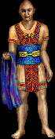

|

|
Tepal’s quick, furtive eyes give away the abundant and nervous energy which occupies him. Something about him tells you that he has good reason to be nervous.
|
Sells/Teaches
|
Buys
|
Light Jerkin, 61
Light Robe, 459
Short Skirt, 76
Pants, 76
(prices vary)
|
Nothing
|
|
Info & Tips
|
- Location: The Crooked Hem Garment Shop
- Favor/Quest/Courier: ??
- Tip #1: say 'new look tepal' and he will change what colors you have when you don't have any clothes on.
- Tip #2: say 'new look tepal' while wearing a desciple robe and it will look as though you have a short sleeved desciple robe. However, upon unequipping the desciple robe you will lose the short sleeved look.
|
|